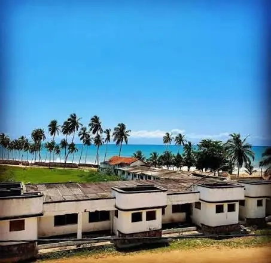
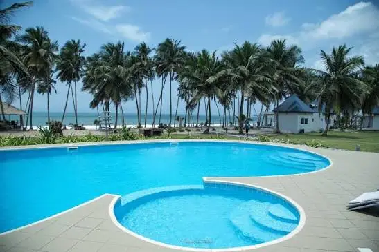
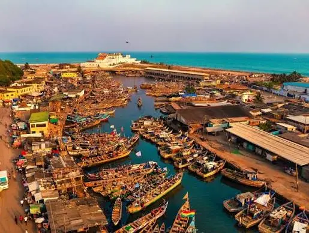
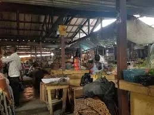

Sir Charles Beach
A quieter coastal spot known for its natural pool, calm enough for safe swimming, with a relaxed, less-crowded feel than the main beach.
Open Map
The landmarks, beaches, and events that make Winneba worth exploring,
start here before you plan your day.

A quieter coastal spot known for its natural pool, calm enough for safe swimming, with a relaxed, less-crowded feel than the main beach.

A popular beachfront spot in Winneba for relaxing, swimming, and enjoying fresh seafood from beachside vendors.
One of the main campuses of the University of Education, Winneba, home to lecture halls, student housing, and everyday campus life.
Another core campus of the University of Education, Winneba, contributing to the town's lively student population and academic character.

Where local fishermen bring in the day's catch, offering a firsthand look at Winneba's fishing traditions and coastal trade.

The town's central marketplace for fresh produce, local goods, and everyday essentials, a great place to get a feel for daily life.